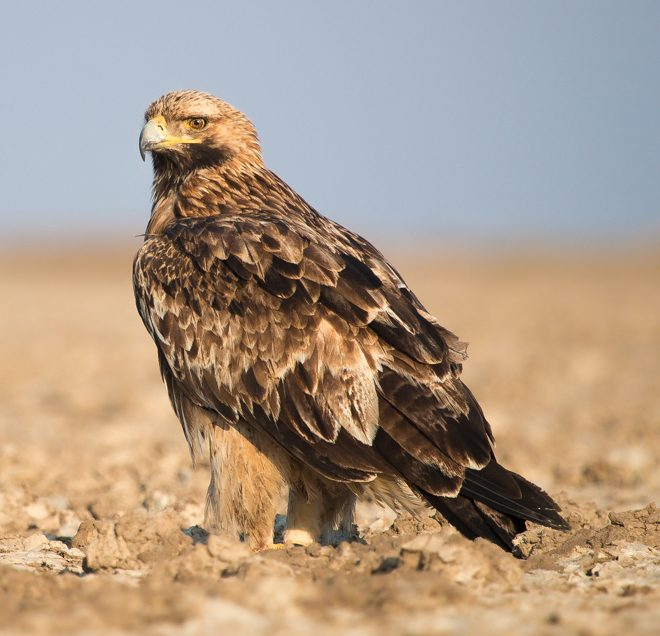

जुमीज़Eastern Imperial Eagle
Aquila heliaca · Accipitridae · BRD-0281

- Scientific name वैज्ञानिक नाम
- Aquila heliaca Savigny, 1809
- Family कुल
- Accipitridae
- Hindi हिंदी
- जुमीज़ / ईस्टर्न इम्पीरियल ईगल
- Local names स्थानीय नाम
- eastern imperial eagle, jumiz, jumbiz, imperial eagle
- Status here यहाँ की स्थिति
- native
- Movement आवागमन
- Migrant
- Known from कहाँ दर्ज
- Others have published records from the Basti–Ayodhya districts बस्ती–अयोध्या के ज़िलों से दूसरों के प्रकाशित अभिलेख
- IUCN IUCN
- VU
- Review समीक्षा
- not yet reviewed
When to look कब देखें
Migrant प्रवासी. Expected mainly in October, November, December, January, February, March. मुख्यतः अक्टूबर, नवंबर, दिसंबर, जनवरी, फ़रवरी, मार्च में अपेक्षित।
Breeds across the steppes of southeastern Europe and Central Asia; regular winter visitor to northern India from October to March (Baker 1928). All migrants and visitors →
Tell it apart from इनसे अलग पहचानें
जुमीज़ / Eastern Imperial Eagle
Aquila heliaca Savigny, 1809 — Accipitridae
जुमीज़ — मध्य एशिया के घास के मैदानों से सर्दियों में उत्तर प्रदेश के खुले तालों और मैदानों में आने वाला एक विशाल और भारी शिकारी उकाब, जिसका शरीर गहरा काला-भूरा, सिर सुनहरी-पीला और कंधों पर सफेद पंखों के धब्बे होते हैं।
Quick Identification त्वरित पहचान
| Feature | Description |
|---|---|
| Body size | Massive, heavy-bodied eagle with long broad wings and protruding head |
| Adult plumage | Dark blackish-brown body contrasting with pale golden-buff crown and nape |
| Scapular patches | Distinctive pure white patches on scapulars forming white shoulder braces |
| Tail pattern | Dark grey tail marked with fine dark mottling and a broad black terminal band |
| Flight silhouette | Broad rectangular wings held completely flat when soaring, with fingered primaries |
Immense dark raptor distinguished in adult plumage by its deep blackish-brown coloration, contrasting golden-tawny hindneck, pure white scapular shoulder braces, and flat wing plane in soaring flight. Juveniles are pale sandy-buff boldly streaked with brown, lacking white scapulars.
हिंदी: यह एक बहुत बड़ा और भारी शिकारी पक्षी है। वयस्क पक्षी का शरीर गहरा काला-भूरा होता है, सिर का पिछला हिस्सा सुनहरा होता है और कंधों पर सफेद परों के साफ धब्बे होते हैं। उड़ते समय इसके पंख बिल्कुल सीधे रहते हैं।
Morphology आकारिकी
| Measurement | Value | Source |
|---|---|---|
| Male wing | 575–600 mm | Baker (1928) as Aquila heliaca |
| Female wing | 605–680 mm | Baker (1928) as Aquila heliaca |
| Tail | 258–270 mm | Baker (1928) as Aquila heliaca |
| Tarsus | About 91–95 mm | Baker (1928) as Aquila heliaca |
The body is heavy and powerful with broad rectangular wings and a relatively short, square-cut tail. Adult plumage is largely deep blackish-brown. The lanceolate feathers of the crown, nape, and sides of the neck are pale tawny-buff, forming a striking golden mane. The scapulars bear patches of pure white feathers that show prominently as white shoulder epaulettes. The tail is greyish, finely barred with dark brown and tipped with a broad black subterminal band and narrow whitish rim. The iris is pale hazel-yellow; the cere and feet are dull yellow. The tarsi are fully feathered with dark brown plumage down to the toes. Females are considerably larger than males. Juveniles show pale sandy-fulvous plumage with prominent brown striations.
Vocalisations. Mostly silent on its Indian wintering grounds; occasionally utters deep, barking yelps when contesting feeding perches or interacting with conspecifics.
हिंदी: यह भारत के सबसे बड़े शिकारी पक्षियों में से एक है (Baker 1928 as Aquila heliaca)। मादा नर से काफी बड़ी होती है। चोंच भारी और पंजे बहुत मजबूत होते हैं। इसके पैर नीचे तक भूरे परों से ढके होते हैं।
Behaviour & Ecology व्यवहार और पारिस्थितिकी
A powerful wintering predator that frequents open country, agricultural fallows, and expansive wetland systems. It spends long hours perched conspicuously on bare tree branches, irrigation pylons, or ground mounds overlooking open terrain. When hunting, it soars on flat wings or flies low over reedbeds, surprising resting waterfowl or seizing rodents. It frequently pirates prey from smaller raptors, including harriers and kestrels, through persistent aerial harrying.
हिंदी: यह सर्दियों में खुले मैदानों और झीलों के पास रहता है। यह ऊंचे पेड़ों या खंभों पर बैठकर शिकार पर नजर रखता है। यह बत्तखों और चूहों का शिकार करता है और अक्सर दूसरे छोटे बाजों से उनका शिकार छीन लेता है।
Life Cycle जीवन चक्र
An obligate long-distance migratory visitor that does not breed in India. It breeds across the vast steppe belt from southeastern Europe across Central Asia to Lake Baikal. Adults and immatures begin arriving in the northern plains of India during late October and November, establishing winter foraging home ranges around perennial wetlands. They remain active through the winter months and depart northward during late February and March to reach their high-latitude breeding grounds.
हिंदी: यह प्रवासी पक्षी है जो भारत में प्रजनन नहीं करता। यह अक्टूबर-नवंबर में रूस और मध्य एशिया के ठंडे इलाकों से अवध के मैदानों में आता है और पूरी सर्दी यहां बिताकर मार्च में वापस लौट जाता है।
Host Plants or Prey आहार
Opportunistic carnivore and kleptoparasite with a diverse winter diet. Preys heavily on aquatic birds, including common teal, pintail, northern shoveler, and coots on wetland waters. On dry agricultural ground, it hunts Indian hares, bandicoot rats, and smaller rodents. It readily feeds on animal carcasses, scavenging alongside vultures and steppe eagles at rural livestock disposal sites.
हिंदी: यह एक मांसाहारी शिकारी है जो पानी के पक्षियों जैसे बत्तख और जलमुर्गी का शिकार करता है। यह खेतों में खरगोश और चूहे भी पकड़ता है और मृत पशुओं का मांस भी खा लेता है।
Predators / Natural Enemies शत्रु
Adult imperial eagles are top-tier apex wintering predators that face no natural predators. They engage in competitive interactions with resident steppe eagles, tawny eagles, and marsh harriers over wetland foraging territories and carcass feeding rights.
हिंदी: वयस्क उकाब का कोई शिकारी शत्रु नहीं होता। केवल भोजन और बैठने की जगह को लेकर इसकी अन्य बड़े चील-बाजों से झड़प होती है।
Agricultural / Human Relevance कृषि प्रासंगिकता
Protected under the Wildlife (Protection) Act 1972. It provides agricultural benefits through the consumption of destructive rodent pests in winter rabi cropland. Because it is globally threatened, its presence in eastern Uttar Pradesh highlights the international conservation significance of the region's oxbow wetland ecosystems. Electrocution on uninsulated rural power lines presents a serious modern hazard.
हिंदी: वन्यजीव (संरक्षण) अधिनियम 1972 के तहत संरक्षित। यह खेतों में चूहों को खाकर रबी की फसलों की रक्षा करता है। वैश्विक रूप से संकटग्रस्त होने के कारण इसका संरक्षण बहुत जरूरी है।
Expected Locally स्थानीय रूप से अपेक्षित
Not a field record. Written from published accounts for eastern Uttar Pradesh. No confirmed local sighting yet — if you have seen it, that is what the atlas needs.
अभी तक स्थानीय पुष्टि नहीं। यह विवरण प्रकाशित स्रोतों से है, किसी अवलोकन से नहीं।
GBIF holds published records from these districts. It is expected around large wetland complexes such as Bakhira Lake and the flood basins of the Ghaghara and Rapti rivers between November and February. A confirmed local record requires a clear photograph showing the white scapular patches, flat wing profile, or streaked juvenile plumage with date and wetland coordinates.
हिंदी: यह बखीरा ताल और घाघरा नदी के बड़े आर्द्रभूमि क्षेत्रों में सर्दियों में संभावित है। पुष्टि के लिए कंधों पर सफेद धब्बे या धारीदार परों को दर्शाती तस्वीर आवश्यक है।
Distribution वितरण
Global range: Breeds in southeastern Europe, Russia, Kazakhstan, and Mongolia; winters across the Middle East, Pakistan, northern India, and southern China.
In India: Regular winter migrant across the northern and central alluvial plains, Punjab, Rajasthan, and the Gangetic basin.
In Uttar Pradesh: Wintering records exist across major wetland sanctuaries and river basins across the state.
In Basti district / eastern UP: Expected as an uncommon winter visitor across open wetland complexes and adjoining cultivation.
हिंदी: यह यूरोप और मध्य एशिया में प्रजनन करता है और सर्दियों में भारत आता है। उत्तर प्रदेश में यह सर्दियों में बड़े तालों और नदी कछारों में देखा जाता है।
Research Questions शोध प्रश्न
- What are the key winter foraging roost site characteristics preferred by Aquila heliaca in the Terai floodplain matrix?
- To what degree do medium-voltage rural electrification lines cause winter raptor mortality in eastern Uttar Pradesh?
- What proportion of winter diet consists of scavenged domestic livestock versus wild-hunted waterfowl?
- How does human recreational and fishing disturbance at oxbow lakes alter daytime foraging site selection?
- क्या सर्दियों में अवध के तालों पर मछली के शिकार और मानवीय गतिविधियों से इस उकाब के रहने में बाधा आती है?
- क्या बिजली के तारों से करंट लगने के कारण इस दुर्लभ पक्षी की संख्या पर बुरा असर पड़ रहा है?
Similar Species मिलती-जुलती प्रजातियाँ
| Species | How to tell apart | हिंदी | |
|---|---|---|---|
| Steppe Eagle \ | Aquila nipalensis | Lacks white scapular shoulder patches; oval horizontal nostrils; distinct pale gape line reaching rear eye | स्टेपी ईगल के कंधों पर सफेद धब्बे नहीं होते और उसका मुंह आंख के पीछे तक खुलता है |
| Greater Spotted Eagle \ | Clanga clanga | Shorter tail and rounder wings; holds wings bowed downward when soaring; lacks golden crown | ग्रेटर स्पॉटेड ईगल उड़ते समय पंख नीचे की ओर झुकाए रखता है और उसका सिर सुनहरा नहीं होता |
| Tawny Eagle \ | Aquila rapax | Paler rufous-brown coloration; smaller size; lacks white scapular epaulettes and pale golden nape | टॉनी ईगल आकार में छोटा और मटमैला बादामी होता है और इसके कंधों पर सफेद धब्बे नहीं होते |
Field rule: Huge dark eagle with flat wing silhouette, contrasting golden nape, and brilliant white shoulder braces in adult plumage.
हिंदी: उड़ते समय बिल्कुल सीधे पंखों, सुनहरी गर्दन और कंधों पर सफेद धब्बों वाला विशाल गहरा भूरा शिकारी उकाब।
Taxonomy & Classification वर्गीकरण
Original description. Savigny (1809), Description de l'Égypte: Histoire Naturelle, Oiseaux, vol. 1, p. 82; type locality: Upper Egypt.
Subspecies. Polytypic species; northern Indian wintering populations belong to the nominate race Aquila heliaca heliaca.
Family and order placement. Placed in the family Accipitridae, order Accipitriformes, class Aves.
Phylogenetic notes. Forms a superspecies with the Spanish imperial eagle (Aquila adalberti), which was historically treated as conspecific.
IUCN status rationale. Classified as Vulnerable (VU) globally by IUCN (2021) due to small, declining populations impacted by habitat loss and powerline mortality.
हिंदी: इसका पहला वैज्ञानिक विवरण 1809 में सेविग्नी ने दिया था। यह असीसीपिट्रिडे कुल का सदस्य है और बर्डलाइफ इंटरनेशनल द्वारा संकटग्रस्त (Vulnerable) श्रेणी में रखा गया है।
Photo Gallery फोटो गैलरी
No photos yet — add field photos to media/species/eastern_imperial_eagle/ and run node scripts/sync_photos.js.
Photos needed आवश्यक फोटो
- [ ] Adult perched upright showing golden crown, dark body, and white scapular patches (वयस्क उकाब का बैठा हुआ दृश्य जिसमें सफेद कंधे और सुनहरा सिर दिखे)
- [ ] Soaring adult viewed from below showing flat wing plane and dark underbody (उड़ते हुए पक्षी के सीधे पंखों और गहरे शरीर का स्पष्ट दृश्य)
- [ ] Juvenile bird displaying pale sandy-buff underparts with distinct streaking (रेतीले-भूरे रंग के धारीदार युवा पक्षी का स्पष्ट दृश्य)
- [ ] Close-up of heavy head, pale hazel eye, and powerful hooked beak (भारी सिर, पीली आंख और मजबूत मुड़ी हुई चोंच का क्लोज-अप दृश्य)
- [ ] Individual feeding on prey at the margin of an oxbow wetland (ताल के किनारे शिकार खाते हुए पक्षी का फील्ड दृश्य)
- [ ] Open floodplain wetland wintering habitat in eastern Uttar Pradesh (पूर्वी उत्तर प्रदेश के किसी बड़े ताल या कछार का शीतकालीन वास परिदृश्य)
References संदर्भ
- Original description: Savigny, 1809 — see GBIF.
- Baker, E. C. S. (1928). The Fauna of British India, Including Ceylon and Burma: Birds. 2nd ed., Vol. 5. Taylor & Francis, London. (as Aquila heliaca).
- Ali, S. & Ripley, S. D. (1983). Handbook of the Birds of India and Pakistan. Compact ed. Oxford University Press, New Delhi.
- Grimmett, R., Inskipp, C. & Inskipp, T. (2011). Birds of the Indian Subcontinent. 2nd ed. Christopher Helm, London.
- Rasmussen, P. C. & Anderton, J. C. (2012). Birds of South Asia: The Ripley Guide. Vols. 1–2. 2nd ed. Smithsonian Institution and Lynx Edicions.
- IUCN Red List of Threatened Species: Aquila heliaca, 2021.
- GBIF Occurrence Data — Aquila heliaca, India (2025).
Source file: species/fauna/birds/eastern_imperial_eagle.md